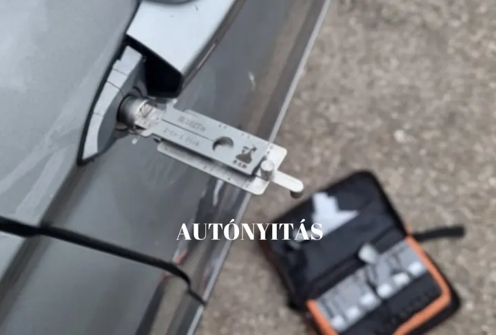
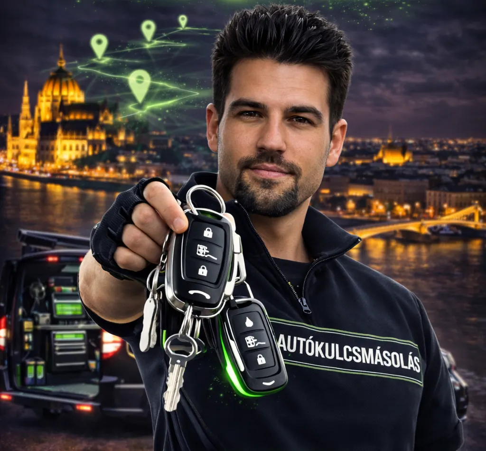
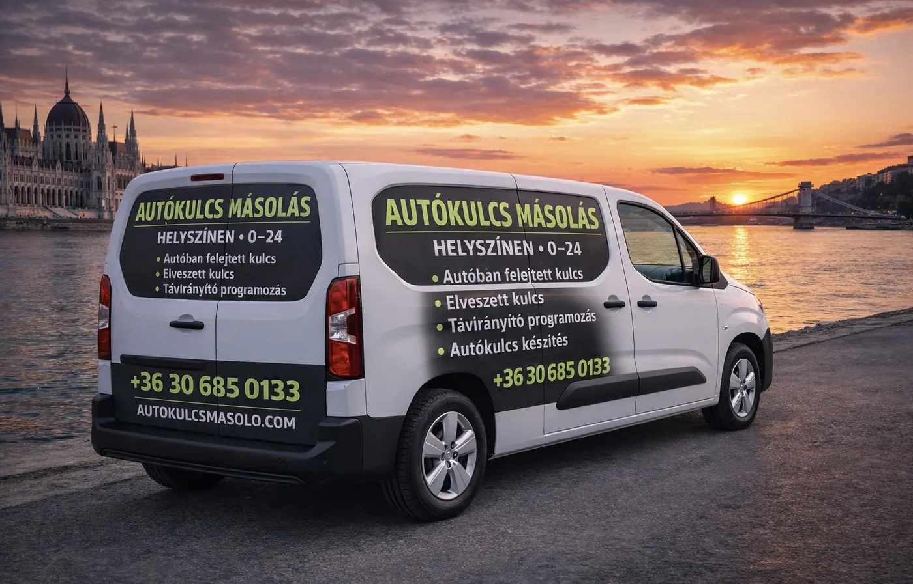
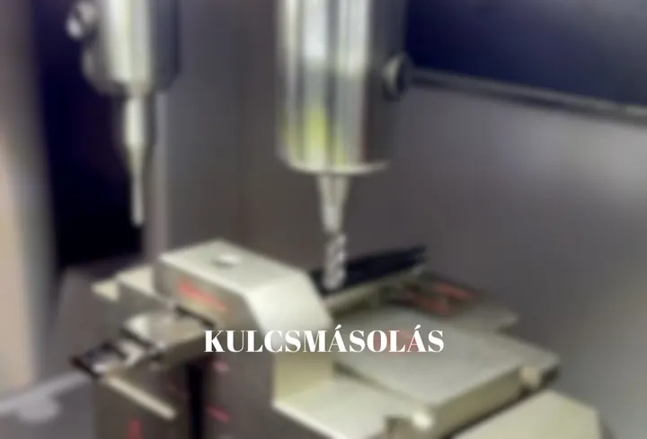
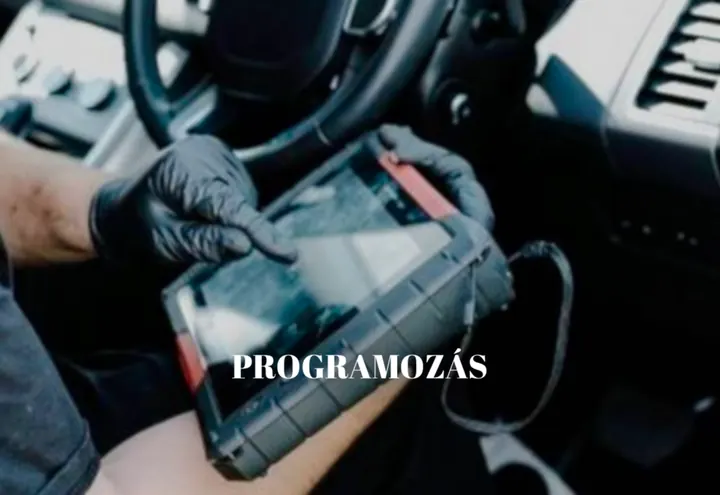

AUTÓNYITÁS
Amennyiben elhagyta az autókulcsát, vagy bent felejtette a kocsiban, mi kinyitjuk sérülésmentesen.
Ez az első lépés az autókulcs elkészítéséhez.

Budapesten30 percen belül
Elhagyta a kulcsát?
Nem nyílik az autó?
Nem indul?
Azonnala helyszínre megyünk
Helyszíni kiszállásBudapest és környéke
Segítség azonnal,
amikor szüksége van rá


Amennyiben elhagyta az autókulcsát, vagy bent felejtette a kocsiban, mi kinyitjuk sérülésmentesen.
Ez az első lépés az autókulcs elkészítéséhez.

A legmodernebb autókulcsmásoló géppel lemásoljuk, elkészítjük az autójához az új kulcsot.

Az elkészült autókulcsát felprogramozzuk az autójához, így az immobilizer a kulcsban indítja gond nélkül az autót és a gombok működtetik a központi zárat.
Akár 30 percen belül
Szolgáltatásainkat Budapesten és környékén végezzük. Megbízható és profi cég vagyunk, az árainkkal verhetetlenek vagyunk.
Hívjon minket még ma!
"Az esti kutyasétáltatás közben elhagytam a kocsikulcsomat. 30 percen belül kiértek és segítettek. Csak ajánlani tudom őket."
"Pótkulcsra volt szükségem az autómhoz. 10 perc alatt lemásolták és elkészítették a kulcsot a márkaszerviz ajánlata harmadáért."
"Nagy választék van náluk, volt egy régi autóm, aminek eltörött a kulcsa, orvosolták perceken belül, ami a legjobb, hogy házhoz is jönnek. Korrekt árak, korrekt munka."
NEM SZERETNE VÁRNI NAPOKAT
AZ AUTÓKULCSÁRA ÉS SZÁZEZREKET
FIZETNI A MÁRKAKERESKEDÉBEN?
AUTÓKULCS KÉSZÍTÉS, MÁSOLÁS, PROGRAMOZÁS,
CHIP MÁSOLÁS 30 PERCEN BELÜL.
MEGFIZETHETŐ ÁRON DOLGOZUNK,
EGY ÉV GARANCIÁT VÁLLALUNK.
KERESSEN MINKET BIZALOMMAL
(A hívást részesítjük előnyben.
Nem mindig tudunk válaszolni az elküldött e-mailekre.
Kérjük, inkább hívjon minket!)